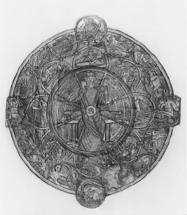
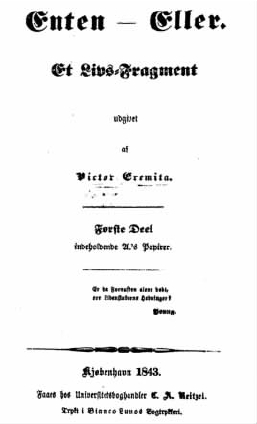
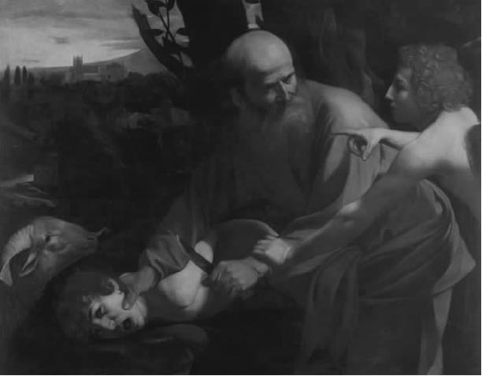

毋庸置疑，克尔凯郭尔所有早期的“美学”著作——《非此即彼》、《重复》、《恐惧与颤栗》和《人生道路的各个阶段》——都例证了他极为重视的“间接”方法。这些作品不仅开始展现对立的观点和生活方式，并且这种展现富于想象或“诗意”，其目的在于从内部说明：从这些角度加以观照，生活会是什么样子。他让读者进入这些迥然相异的梦幻世界，有如进入小说或戏剧中人物的内心世界，令他们感同身受。的确，虚构的类比符合克尔凯郭尔的个性，不仅在于想象这一点，还在于他从来不向读者直接表白。他发表作品总是用不同的笔名，似乎在利用笔名这样的面具，利用飘忽不定的伪装来与他的笔名或他所塑的人物所赞同的观点保持距离，当然，这种距离有时是不诚实的。这种做法有双重目的：用一种令读者感到亲切的方式来表述完全不同的人生观所独有的特性和实质，同时，让读者根据自己所接受到的内容得出结论——这样，不同的观点便有机会“为自己辩护”，外界不会在它们之间进行武断的评判或臆断。
这些不同的生活观体现为什么样的形式呢？克尔凯郭尔区别了存在的三种基本模式或“范畴”：审美的、伦理的和宗教的。虽然克尔凯郭尔在上面提到的作品中用不同的方式提及了这三种模式，不过，审美模式和伦理模式的区别在《非此即彼》中表述得最为清晰，而伦理模式和宗教模式的不同在《恐惧与颤栗》里说明得最清楚，由此，我们可以重点关注他后期的著作。即便如此，在某些方面，克尔凯郭尔提出的三种范畴还是令人迷惑，让人觉得它们涵盖广泛；在内容上，尽管他喜欢以虚表实，但这些范畴更具自传色彩。每一范畴所包含的见解丰富多样，不但反映了他对当时文化潮流的理解，而且体现了他个人历史和成长的复杂特点；实际上，有些素材就是直接来自他自己的日记。因此，人们常常可以看出他求学时代——包括与他和父亲的矛盾关系相关——的心理困惑和艰难抉择，还可以看出他取消和雷吉娜·奥尔森的婚约后情感遭受的创伤。克尔凯郭尔拐弯抹角提到两人的分手，是想让雷吉娜去读，去理解。书里有些地方因此十分做作，这激起他在当代的一些追随者的同情，不过，比较挑剔的评论家对此反应则更为冷静。不管怎样，这种自传痕迹还是提供了丰富的信息，让读者了解他是怎样看待这些不同观点之间的联系的。
审美模式和伦理模式
无论从什么标准看，《非此即彼》都是一部非凡的作品，初版时读者的着迷与困惑并不奇怪。书中的审美观和伦理观是通过一组组经过编辑的论文和书信展示出来的。论文的作者被称为“A”，主要阐述审美观点，而写信人被称为“B”，比论文作者年长，是伦理部分的主角，他的信是写给A的。虚构的编辑告诉读者，B的职业是法官。乍一看，A的论文文体五花八门，令人眼花缭乱，谈论的话题彼此不大相干，从散乱的格言警句和个人经验到对悲剧（《安提戈涅》）、歌剧和性欲（莫扎特的歌剧《唐·乔万尼》）以及对歌德创作的浮士德传说的思考和讨论，这些似乎刻意要让读者感到一头雾水。论文结尾是一段冗长的日记，这一段陈述编排仔细，精心引诱读者；最后这一点（克尔凯郭尔后来自嘲说）可能就是这本书最初获得成功的原因之一。本书的这一部分话题散乱，缺乏明确的思路，和第二部分形成鲜明的对比，这也许意在映射A的观点本身有问题。B写了两封很长的信，言辞冷静，字斟句酌，让人感到他是要印衬那位收信人颇为自得的、浮夸的“才智”。同时，法官对A的观点进行了各种批评，通过这些批评，他的两封信阐明了克尔凯郭尔用“审美的”和“伦理的”这两个术语来界定相互对立的观点和生活方式，其用意何在。在某种程度上，这种用意体现于那篇讨论婚姻意义的长篇论文，而婚姻的意义也是第一封信的主题。不过，克尔凯郭尔所考虑的东西却是在B的第二封信，即著名的《论审美模式和伦理模式在人格构成中的平衡》中得到了全面而广泛的阐述。
对于审美模式和伦理模式的不同，有些人从我们更为熟知的、相互对立的理论——比如享乐主义和传统的道德观，或者康德关于感官的追求和理性的律令的区分——来读解。当然，二者在法官的许多话中都有涉及。不过，《平衡》 [1] 仍是一篇内涵丰富、内容复杂的作品，它包含了众多的思想，这些思想有时互相混淆，纠缠在一起。因此，这种简单的二分法至多为读者提供了一种并不到位的引导。虽然法官在那封信的开头声称，审美的生活方式，其主要着眼点和目标存在于享乐中，然而，读者很快会发现，这一说法绝非全面，也绝非详尽。克尔凯郭尔思维活跃，在某些方面甚至异于常人，他理解的“唯美主义”形式丰富多彩，在诡辩和自我意识的不同层面中有不同的表现；它超越了对纯粹快乐的追求，向不同的方向延伸。毫无疑问，他对唯美主义的见解与其说令人想起和18世纪许多哲学著述有关的、十分世俗的享乐主义，还不如说更为接近19世纪的浪漫主义人生观。他对“伦理模式”的理解也与此相似。这里无疑谈到了明确的责任和义务是重要的。不过，如果认为克尔凯郭尔的全部思想可以简化为仅仅是奉行社会所认可的准则，或者简化为康德式的、对纯粹实践理性的尊敬，那便是曲解了他。真相不仅比这些狭隘的读解所得出的结论更为复杂，更为隐晦，而且和他的观点所包含的更为深远的寓意有着重要关系。
让我们从审美个体开始，更仔细地思考这一问题。尽管克尔凯郭尔明确表示，在《非此即彼》中“没有说教”（《附言》第228页），但是，他是否并非仅仅在展示两种对立的观点，让读者自己决定最终偏向哪一种，这一点仍有争论。其一，书中的伦理学家发言在后，其观点一锤定音。其二，我们感到，B基本上很清楚A的观点；他抓住了这种观点背后的动机，因而能够用解构的方式评判它。如此，随着法官的进一步阐述，我们清楚知道此人的状况在某些重要方面被他视为病态，其中的两方面尤其突出，并相互关联。
首先，以审美模式生活的人无法真正控制自己或自己的处境。他的生活状态是典型的漫无目的 （ins Blaue hinein）。他只“为眼前”而活，总是通过享受、兴奋、兴趣去打发每个瞬间。他不会献身于任何永恒或清晰的东西，而是消失在感官的“即时”中，此时他可能做一件事或想一件事，彼时他又反其道而行之。因此，他的生活没有“延续”，缺乏稳定性或核心，随兴而变，视情况而变，就“像巫师的文字，看这一面是一种意思，翻到另一面，又是另一种意思”。即便如此，我们也不能因此断言，这样的人仅仅受制于冲动，一向如此，肯定如此；相反，他有可能喜爱沉思，像那个日记包含在A的论文中的勾引者一样会算计。不过，如果他真有长远的目标，或决定按某些格言行事，这也完全是一种“实验的”精神：只要这个想法还有吸引力，他就会继续下去，一旦疲倦了或厌烦了，或出现其他更诱人的可能性，他便会弃之而去，这种可能性永远存在；实际上，在实践中，这种“异常活跃的实验”可以被视为类似于理论上的诡辩。因为，不管如何变化，我们仍然可以把生活看做充满可能性的——这些可能性可以考虑或尝试，而不是把生活看做要实现的方案，或要推进的目标。
法官相信，对于审美观点来说，这些态度特别典型，揭示了该观点根本上的不足之处。他指出，唯美主义者“从外部期待一切”；这样的人对世界的理解基本上是被动的，因为他是否感到满意最终要看不受其意志控制的条件是否出现或得到满足。这种屈从于偶然性、“意外事件”，这种逆来顺受，可能表现为各种形式。有时，它依赖于“外部的”因素，如财物或权力，甚至另一个人的青睐；不过，它也可能涉及对于个人来说是内在的东西，如健康或体貌。问题在于，在所有这一类的例子中，人完全受制于环境，受制于“可能是这样，可能不是这样”。他的生活方式与那些很难确定或必然会消失的东西紧密相连，他的意志从来无法保证自己能获得或保留这些东西，甚至哪怕得到了，也无法保证自己能一直享用。一旦这些东西令他失望——这最终极有可能发生——那么，对他来说，存在的意义就消失了。至少他会暂时觉得，自己被剥夺了赖以活下去的、有价值的东西。克尔凯郭尔在另一个地方说，持这种观点的人认为，自我是“一个可以随意赠予他人的东西，就像一个孩子的‘我’，它意味着：好运、倒霉、命运”（《致死的疾病》第51页）。因此，审美的个体具有这样的特点：他不会努力使生活具有连贯性，对当下的自己和自己应该成为怎样的人没有始终如一的观念，他的生活也没有植根于此；相反，他让“随意发生的事情”掌控自己，主导自己的行为。他的内心思索可以说明这一点，并且当这种思索出现时，可能在这个人身上引起挥之不去的绝望。他的全部生活——只是一般而言，并非具体指哪一方面——可以说是建立在一种不确定的偏见上面，因此没有意义。不过，这导向审美观另一个非常重要的方面。关于这一方面，法官有许多话要说。
现在可以指出，这种自我意识可能被压抑或忽视，或者，它的真正意义至少在不知不觉中被回避了。实际上，如果这个审美个体认识到一种“更高级”的存在形式是绝对必要的，他就必然会对生活及其根基感到绝望。然而，他所不愿迈出的正是这通向伦理存在的关键一步。他深陷于自己的生活模式和思维，不愿努力去解放自己，而是想方设法逃避真相对他的影响。有时，这表现为一个人通过各种活动去克服或消除内心的不满足感，如浮士德便采用一种“有魔力”的形式。然而，一个“受人尊敬的”实业家也会有类似的表现，以非常顽固的态度从事自己的事业。不过，可以想见，还有一种更为隐蔽的形式。因为存在着克尔凯郭尔曾经所称的“知识和意志的辩证互动”，这使得我们很难看清一个人到底是在有意识地努力摆脱他所认识到的（不管其认识多么模糊）困境，还是他认为自己的困境似乎排除了全部关于基本选择和变化的观念，即他对此完全无能为力。这第二种可能性也许会成为现实。
由此，一个人经过对审美观念进行异常地修正，会将悲伤而不是快乐视为“生活的意义”。他想，至少这是自己无法被剥夺的东西，由此，他感到一种不合常态的满足。他可能认为自己注定要悲伤，命定要悲伤。他的存在、他的感觉、他的观点，这些都无情地遵循事物的本质。由此，他把自己的不快乐归咎于个性和所处环境中那些无法改变的东西：他“多愁善感”，或其他人不善待他。或者，他可能夸大自己在这个世界上的处境和命运，例如声称自己是“不幸的人”，是个“悲剧性英雄”。此外，他还可能更笼统地将自己说成一个浪漫的厌世者 （Weltschmerz），带着大彻大悟的悲观者的口吻，认为实际的决定这类问题不可能具有什么终极的意义，以此自慰；不管他做什么，都会以懊悔而告终。在所有这些思想中，他有可能找到虚假的宁静，甚至可以找到平静的骄傲。因为这些思想的最终要点是“不折不扣的宿命论，它总带有某些魅力”（《非此即彼》ii，第241页）；个人接受宿命的或决定论的观点，对自己的处境巧妙地推卸责任，为自己在这种处境下的消极无为进行开脱。不过，这也仅仅是一种托辞，一种掩饰，在其背后是他没有说出口的决心，即决心置身某一阶段，只要愿意他又可以自由离开。
总而言之，克尔凯郭尔对唯美主义的分析带着微妙的心理色彩，他尤其关注那些难以一言而蔽之的细节，这里只能提出这些细节中最重要的主题。我已经表明，他对基本范畴的运用非常灵活，这使得他可以指出毫不相关的现象之间出人意料的联系，非常具有启发意义。但即便如此，有时他对范畴的延伸也有可能模糊它们的明确意义。如果《平衡》的某个读者有时想知道，只要利用一点点机智，我们是不是可以把一切都解释为“审美地生活”，如果他想不通这一点，那是可以理解的。这还不是克尔凯郭尔的模糊范畴引发的唯一问题，因为我们并非总是很清楚，在谈到审美意识的时候，克尔凯郭尔是在泛泛而论，还是联系到自己那个时代和文化的具体表现。不过，毫无疑问，他认为自己谈到了很多同时代的思潮和行为。例如，他曾明白地说明“审美的沉思”无法“深刻地、真诚地行使意志力”，“所有年轻的德国人和法国人都在悲叹”这种病态（《非此即彼》ii，第193页）。法官对某些典型的审美观的陈述，和克尔凯郭尔后来在《当今时代》和其他地方对他那个时代流行的社会思潮中所包含的其他倾向所作的批评，这二者之间也可看出类似之处。这些倾向包括：沉迷于“外表的”、外在的东西；对个人身份和责任没有清晰的认识；心安理得地接受宿命论神话，不愿接受认真而实际的承诺；以世故的超然这一面具掩盖无所不在的冷漠这一风气。我们会发现，这些责难和他后来考察黑格尔的形而上学对同时代的吸引力和影响不无关系。
不过，要是无条件地把克尔凯郭尔在写作《非此即彼》时对黑格尔的看法等同于他后来在反对黑格尔“体系”的论辩中所表达的看法，那是错误的。诚然，正如《非此即彼》这一书名所表明的，本书的部分目的在于反对黑格尔的以下观点：意识的独特形式以辩证的必然顺序相互跟随；相互矛盾的观点在普遍的心灵或精神依次展开的更高层次上实现和解。在克尔凯郭尔看来，从一种存在模式过渡到另一种存在模式遵照的是完全不同的形式。这只能依靠个人在不同的选择中作出不受限制的、无法回头的决定才能达到；并且，必须把这些选择视为互不相容的，而不能根据某种高高在上的理论把它们看做最终是可以协调或“调解”的。不过，尽管考虑到这些因素，《平衡》中显露出来的伦理领域的面貌并没有完全摆脱黑格尔哲学的影子。首先，从审美模式通向伦理模式的途径被看做一个渐进的精神运动。出现危机的审美意识至少“呼唤着”接纳一种新的生活方式，哪怕这不是当事的个人想着手解决的问题。法官所用的术语带着明显的黑格尔的痕迹，他说，“人的生命迎来这一时刻，可以说，他的即时性臻于成熟，精神要求更高的形式，在这种形式中，它将让人领悟到它是精神”（《非此即彼》ii，第193页）。我们进而得知，伦理模式与其说是“废除审美模式”，不如说是“改造”它——这句话和克尔凯郭尔关于调解的泛泛之论相符合，当然这种吻合有些不太自然。不过，法官在伦理层面上讨论了个体和普遍性的关系，正是在这里我们最清楚黑格尔所起到的背景作用。

图9 命运之轮。作为伦理存在的个体并不受制于偶然因素与命运等外部环境之力。
在关键的方面，关于伦理观点的陈述似乎毫不妥协地集中在个体上。个性是“绝对的”，它“既是目的，也是意图”；在描述伦理模式之特点的出现和发展时，法官把“选择自我”视为基本概念，这进而与自我认知、自我认同、自我实现紧密相关。伦理模式的主体把自我看做一个“目标”，一种“设定的任务”。他和唯美主义者不同，唯美主义者一直全神贯注于外在的东西，而他的注意力则指向自己的本质，即他作为一个人这一坚实的实在拥有某种才能、爱好和激情，他总是有力量去安排、掌控和培养它们。因此，可以说，他有意识地、刻意地承担对自己的责任。和唯美主义者不同，他并不把个人的特征和性格当做不可改变的、必须温顺服从的事实；相反，他视之为一种挑战——他的自我认知不“仅仅是一种意图”，而是“对自己的反思，这种反思本身就是一种行动”（《非此即彼》ii，第263页）。而且，通过这种内在的理解和批判性的自我挖掘，一个人不但会认识到他在经验上是什么，而且认识到他真正想成为什么。因此，法官提到“理想的自我”，这是“他不得不为自己构想的自画像”。换言之，伦理模式中的自我，其生活和行为必须是融合的，对自我的明确理解指引它们，这种理解基于他清楚地了解自己的潜力。无论世事如何变迁，命运如何多舛，这种理解都不为之所动。他和我们看到的唯美主义者不一样，唯美主义者对发生在自己身上的一切无能为力，而他不会屈从于外在环境和无法预知的偶然性的专横制约。

图10 克尔凯郭尔《非此即彼》原著首页。
从他采取的立场看，人生的成败也不能用他是否已经达到在这个世界上的目标来衡量。具有最终意义的是他完全认同这些目标；与此相关的是做事的精神、追求目标的热情和真诚，而不是其行动产生的、看得见摸得着的结果。
在所有这一切当中有一个熟悉的音调，它在某些方面表现为关于自我决定之经典学说的延伸，这种经典学说可以追溯到斯多葛学派，甚至更远。不过，它和康德所提出的更为近代的思想也有着重要的共同点。我们已经指出，康德强调道德意识的自由和独立，即个人服从于其本性的要求，这一本性是一个独立自主的、自我导引的人所拥有的本性。而且，康德哲学的一个中心要点是只从行动者的意志程度来衡量道德价值；这里强调的是他行动的意图，是他想做什么，而不是看他是否实现了自己所设定或想象的目标。克尔凯郭尔自己对道德观点的陈述虽说不上夸大，但也反映了这两个特点。不过，他的陈述——至少在目前来看——可能令读者感到并不充分，哪怕仅仅是因为这一陈述在解释伦理生活时没有顾及其具体内容。原因在于，如果说一个以这种方式生活的人肯定会承认具体的规范和价值观，这些规范和价值观在他看来既适用于他人也适用于自己，理当获得普遍的认同和接受，那么这值得商榷。的确，B自己迫不及待地强调这一点。因此，法官当然不厌其烦地否认每个人都有权依照自己的个人品味和性情来诠释这一伦理观所包含的“更高形式”：这样的看法带有“经验主义”的意味，它可被归于某种浪漫主义，属于审美范畴，不属于伦理范畴。伦理的基本范畴是“善恶”和“义务”；人们提及时，似乎它们拥有一个所有使用它们的人都同意的意义。想到这一点，我们有理由肯定，伦理模式的个体“以自己的生活表达普遍的真理”。不过，果真如此的话，它在多大程度上可以和上面阐释的、不可妥协的自我中心理论达到调和呢？这似乎表明，这样一个人的价值观最终只能来源于他自己：如果他反而承认存在着社会认可的有约束力的义务，难道不是在放弃自己的基本独立，因而又一次屈从于表面的、外在的东西吗？
对于这个显而易见的难题，康德自己的实践理性学说可能已被援引来提供解答。根据这一学说，道德主体努力与自愿接受的原则达成妥协，这些原则通过了康德的“绝对命令”——人的行动准则可以“通过意志力成为普遍规则”——中所体现的连贯性的检验。对于“理性的本性”而言，尊重这种连贯性是内在的；对道德行为者来说，这一“理性的本性”是所有人通常都具有的。因此，可以认为，如果伦理模式的个体要表达B所说的“其内在的本性”，那么用符合所提到的要求的规则来约束他的行为就够了，这可以保证上述规则得到普遍的接受。不过，法官是否希望认可如此严格而正式的陈述，我们还很不清楚。并且，《平衡》中实际表达的内容所指向的是黑格尔而不是康德研究这一问题的方法。此外，黑格尔还批评康德的道德标准过于抽象，无法提供明确的指导；批评它只要在决定其普遍的运用时没有产生矛盾，这一标准似乎对任何原则都说得通，连最不道德的原则也不例外。相反，我们应该认识到，道德义务“植根于公民生活这一沃土中”。换言之，只有真实社会中的实践和制度才是道德要求的内容与权威的来源。这些实践和制度构成一个清晰的框架，伦理模式的主体能够理解其基本原理，并且就这一框架来说，他作为一个自由的、果断的存在可以完全发挥其潜能。在这里，个人的渴望和集体存在的要求之间没有冲突。个人是社会不可或缺的一个部分，他对社会强加给他的义务和责任的体验不是表现为外在的约束，而是表现为赋予价值观和利益以客观形式，他在内心里认为这些价值观和利益就是属于他自己的。这样，个人良心的要求（康德正确地强调了这一点）和以社会为基础的道德生活观的内在要求二者最终得以调和。
必须承认，黑格尔的理论建立在某些值得怀疑的设想上，这些设想关乎他所观察的不同社会的理性结构，与他的历史哲学也相关，它们引出的话题在此还无法讨论。不过，法官有许多话暗示，他所理解的伦理模式符合之前所概述的黑格尔关于道 德 （Sittlichkeit）的观点。例如，他说，我们不能认为，伦理模式的个体必须发展的自我像某些“神秘的”学说所认为的那样“孤独地”存在，这一个体和他的公共环境以及生活环境是“互惠的关系”。作为“一个社会的、具有公民特征的自我”，他所要实现的自我不是抽象的，抽象的自我“适用于一切，因而什么也不适用”。按法官的话说，从这一点来看，诸如缔结婚姻、有一份工作或有用的职业、承担民事性或制度性责任，这些都是基本的。然而，不能因此就说，由此带来的义务会从外界约束这个人，“外在于个性”，限制他的自由。对唯美主义者这个“附属的人”而言，“偶然性起着巨大的作用”，伦理模式的个体与之不同，他把自己要服从的要求看做一个可起作用的社会因素，他的性格充满了这些义务所赋予的精神。在此意义上，普遍性不是“外在于个人”，相反，二者是合为一体的。对于那些在个人看来只属于自身的义务，他会自发地履行，并赋予其具体的表述。这真正是“良心的秘密”——个人生活“按其可能性同时是普遍的，哪怕不是直接的”（《非此即彼》ii，第260页）。因此，本来乍看之下，二者的隔阂有可能破坏伦理观的统一性和一致性，现在这一隔阂已经明显消除。
那么，《平衡》里所解释的观点到底有多么全面呢？我们拿它与审美的存在模式作比较，它是不是提供了唯一的另外一种选择呢？更重要的是，它在多大程度上可以解决一个人在生命历程中遭遇的所有问题？对于这后一个问题，法官本人有时也似乎心存疑虑。在这里和在之后发表的《人生道路的各个阶段》中，他一再出现，引人注目。表面上看，他自信满满，不过，这自信的背后却隐藏着紧张和压力。正如我们所看到的，在一些地方，对遵从道德观的人来说，他主要关心其生活的主体特性，即生活经验的质地。不管他在别的地方多么努力调和伦理模式的普遍内容，事实依然是，他在这些地方强调的不是普遍的或共同的标准是否实用，而是行为者用什么方式理解自己的行为、自己信仰的深度，以及他对自己有多真诚。我们很难将这一点和一种观念隐含的意义脱离开来，这种观念即，最终而言，每个人必须找到自己的路，穿越一系列内在的理解；这一理解公平对待各人的独特个性，并且，不管显得多么矛盾，最终使其得以超越伦理模式的界限。在《非此即彼》和《人生道路的各个阶段》中，法官开始长篇大论，到最后却令人不安地怀疑起伦理观的自足性及其基本范畴：在这两部著作，尤其是在《人生道路的各个阶段》中，他承认，某些“与众不同的”个人在努力实现伦理的基本原理时遇到了极大的困难。不过，他在这里只是谨慎地讨论了提出的问题，小心地留出余地，显然不太有意向正面解决。另一方面，《恐惧与颤栗》则清楚而雄辩地表述了它们引起的怀疑，其背景清晰地将伦理的观点与宗教的观点对照起来。他在《平衡》里怀着犹豫、多少躲闪着接近的边缘地带在这里得以被跨越。
伦理模式的悬置
《恐惧与颤栗》这部作品署的是化名，即沉默的约翰内斯。这位作者拒绝挂上哲学家的头衔，至少不做黑格尔意义上的哲学家。很明显，他也不打算做个虔诚的基督徒，为宗教信仰说话。即便如此，在他所针对的对象看来，他的话目的明确，那就是要具有哲学和宗教上的意义。虽然自身立基于伦理模式之中，但他敏锐地意识到自己所属的范畴有显而易见的局限性。更确切地说，他关心的是伦理模式无法理解信仰这一现象。他坚持认为，我们当然可以这样理解信仰，这从根本上偏离了由康德和黑格尔开创的方法。这两位采取的方式虽然大相径庭，但他们都努力将宗教信仰这一观念吸收到思想的其他范畴中，或使之从属于这些范畴——康德把宗教信仰的观念看做实践的理性或道德的理性的假设，黑格尔认为宗教信仰在意识的形象或想象这一层次上具有预示性，该层次在他那包罗万象的哲学框架中实现了以理性方式来表述自己。相反，在《恐惧与颤栗》中，信仰的地位是完全独立的：它处于伦理思维的领域之外，我们无法用普遍的或理性的话语来加以阐述。然而，这并不是说我们应该把它看做本质上是原始的、不值得尊敬的东西，它不是“我们希望尽快战胜的、童年的疾病”。相反，本书在结尾时提出：它构成“一个人最高层次的激情”。而且，全书还自始至终地表明，一个人只有在道德上敏感和成熟，才能意识到它神秘和严格的要求达到了怎样的程度。
克尔凯郭尔的目标是以生动而有力的方式认清这些要求所具有的令人不安的特征。他着重研究一个具体的例子并显示其主要特征，希望以此突出一个概念的意义。对于这一概念，他的同辈人并没有实实在在加以关注；它真正的含义不是被牧师令人宽慰的话所压制，就是神秘地消失在哲学家的理性分析之中。他这样做，并不是打算隐藏其真正的寓意。他竭力强调，如果从一种排他性的伦理角度去看，在他所讨论的具体事例中，这些寓意令人震惊，甚至令人反感。
不可否认，他所选择的例子有明确的目的指向。这例子来自《圣经》中亚伯拉罕——“信仰之父”——的故事。上帝要求他杀死自己的儿子以撒来献祭。亚伯拉罕依令行事，举起那把致命的利刃，不过在最后一刻，他的手停住了，牺牲变成了一只山羊。这一整件事意在表现神定的考验或对精神的考验，而他成功地通过了。

图11 亚伯拉罕与以撒，以及信仰的显现。
对这样一个故事，我们该作何反应？在克尔凯郭尔眼里，很明显，这个故事的价值在于它毫不掩饰地表现了亚伯拉罕所面临的选择的性质。他只能通过行动服从上帝的命令，这一行动不仅违背他作为一个可亲的父亲的自然倾向，而且要破坏深深植根于他心里的道德准则，即不能杀害无辜的人。此外，这一行为极端违背道德，因为要杀的人是亲生儿子。因此，他肯定认为自己被迫做的事无论在人情上还是在道德上都是令人憎恶的，我们对这件事也会有同样的反应。不过，正如沉默的约翰内斯指出的，他庄严地去完成落在自己头上这令人反感的任务，不断受到牧师或其他人的赞美。这里出现一个问题：那些津津乐道于类似颂歌的人们究竟在多大程度上真正理解自己所说的话？我们只要设想一下，如果一个教徒真的打算仿效亚伯拉罕，他的牧师会对他说些什么：
（《恐惧与颤栗》第28页）
牧师甚至可能为自己合情合理的雄辩而洋洋得意，可理由是什么？难道他在布道中不是赞美了亚伯拉罕，而亚伯拉罕不正是做了他正在谴责的事吗？按伦理学观点，答案只能是：没错。简而言之，“从伦理观看，亚伯拉罕的行为就是有意谋杀以撒”。任何人如果想正确理解亚伯拉罕的处境以及他的行为所涉及的东西，就必须面对这一点，不可敷衍。采用笔名充当作者的克尔凯郭尔并没有自诩能够深入亚伯拉罕的生活和思想，因而能理解他。不过他相信，自己揭示了一些情况，这些情况使我们有可能在这样的背景下讨论信仰。他也相信，自己因此可以昭示（哪怕是间接地）伦理观和宗教观二者之间真正的关系——在他那个时代的学术氛围里，这种关系一直遭到曲解。
要研究这一问题，一个方法是将亚伯拉罕的困境与道德或“悲剧”英雄的处境进行比较。“悲剧”英雄同样发现自己被迫去做某件令人厌恶的事，不管是因为这件事有悖于他的天性，或因为它侵犯了根深蒂固的道德准则，还是二者兼而有之。不过，对于这样的英雄而言，在他看来有必要去做的事情是有着明确的伦理基础的：克尔凯郭尔以阿伽门农为例。阿伽门农决定将自己的女儿伊菲革涅亚献祭给自己的国家。他认为自己尽管干了如此可怕的事情，却依然能够“从容立足于”伦理世界中。不管他感到多么痛苦，不管他认为自己个人遭受了多大的损失、有多么懊悔，他依然相信，自己是在遵从一种得到公认的原则或内心认可的一个共同目标，而这些比所有其他的思虑都重要。因此，在面对严酷情况的时候，他有理由期待着得到周围人的同情和尊敬——“悲剧性英雄放弃一种确定性，为的是获得更大的确定性。在旁观者眼里，他是可信的”（《恐惧与颤栗》第60页）。他至少可以“为天下的安全而感到高兴”，他知道自己的行为能得到所有人——甚至包括牺牲者本人——的认可和理解，因而是合理的。
对于亚伯拉罕这位“信仰的骑士”而言，情况截然不同。我们从故事里知道，这位悲剧英雄仍然把伦理作为自己的“终点”或目标，哪怕这意味着为了实现它，将要牺牲某些责任。然而，亚伯拉罕完全逾越了伦理界限。在伦理界限之外，他有更高的目标，“为此，他将伦理悬置起来”。他“放弃普遍准则”，为此感到一定程度的痛苦，这种痛苦超过悲剧性英雄在道德上感到的痛苦。亚伯拉罕孤立无援，不可能向他人辩解自己的行为。在理性思维和理性行动的层面上，他的行为肯定是极不寻常的，甚至是荒唐的。作为一个具体的人，他把自己放在“一种与绝对的绝对联系”中。如果他的行为说得过去，那也只能说是出于神的旨意，这旨意只针对他一个人，他得到了满足，但这种满足无法用人类的标准去解释清楚。从人之常情看，他不是疯了，就是十分虚伪。而且，他如果用人可以理解的标准去为自己辩护，就相当于逃避上帝赋予他这一任务的情境，而该任务意味着对上帝的绝对义务，它超越伦理说教的领域；为了完成这一任务，他必须面对和克服所有与之相悖的诱惑。亚伯拉罕只有抵御这些诱惑——道德的、天性的——才能经受住信仰的考验。换言之，他准备一如既往地承受自己那自相矛盾的信念带来的可怕后果。在这一点上，他当之无愧地堪称“伟大”——人们经常不假思索地这样赞美他。
克尔凯郭尔描述那些在痛苦中追寻着不为人知的使命的人所面临的困境，在这一过程中，他们“走在路上，未见到一个旅行者”。克尔凯郭尔的笔触中流露出无可掩饰的辛酸。他所写的东西深深烙上了个人经历，暗示自己在无法与奥尔森成婚时同样心神错乱，深感孤独。一般的哲学范畴所无法把握的现实困境，以及一个人意识到与已然确立的规范妥协威胁到自己作为个体的完整性，这两种情形同样令人不知所措。不过，无论这些观点在心理学上多么令人印象深刻，它们丝毫无助于说明克尔凯郭尔的核心观点。因为他的核心观点关系到宗教对伦理进行“神学”悬置的可能性，正是这一点招来了许多批评——也许这些批评并非不尽人情。除此之外，在某些情况下所有的伦理要求可被置之一旁的观点还被批评为相当于提倡“道德虚无主义”。他提出的这种修辞技巧无法为之找到借口，更说不上为之辩护。借用某些信念来为有悖道德的行为正名，这些信念又显然默认“荒唐的”行为——这种做法没有什么说服力。如果说它有用，唯一的用处就是毁掉我们对自己价值观的信心，因为它甚至拒绝我们最为确定的观念。当然，有人会回答说，亚伯拉罕被称为“信念的骑士”，不是空口无凭 （in vacuo），也并非缺乏正当的理由：他是在贯彻在他看来属于上帝的意愿。不过，这种自信的根据在哪里呢？康德在讨论克尔凯郭尔后来引为典范的这一事例时，曾一本正经地指出，“在这个例子中，一个错误至少有可能占了上风”。当一个被认为是神旨的命令与我们十分肯定的道德判断相冲突的时候，我们绝不会去责怪上帝。正如在《单纯理性限度内的宗教》里所提出的，康德认为在刚才谈到的情形下，一个“觉悟的”人自然会作出这种正确的选择。
从克尔凯郭尔的话里我们看出，他似乎并不打算反对这一点。只要这样的人只依赖伦理观，那么在他眼里，对于人的理性来说不言而喻的道德判断肯定而且必须起着决定性作用。从这一立场看，人类的整个存在被视为“完全是独立自足的领域”，那完全是一个伦理的世界，上帝被降低到“隐形的、正在消失的一点”。当然，人们可能还会使用宗教语言来谈论热爱和服从神灵的义务。不过，他们在使用这些表述时，其真正含义仅是一种自明的真理而已。克尔凯郭尔曾说：
（《恐惧与颤栗》第68页）
在这一段话接下来的讨论中，克尔凯郭尔重提了一个观点；可以说，他书中的许多内容就是以此为基础。使至高的权威与伦理变得一致是一回事，认为宗教可以简化为这一点，其基本内容完全可以用有限的理性能接受的方式表述出来，则完全是另外一回事。从宗教的角度看，伦理始终只能拥有一个“相对的”地位。他对亚伯拉罕故事的分析显然就是要大大否认一点，即从以上这一观点来看，伦理可以具有终极性或至高无上性。不过，坚持认为它只有相对价值并不是说它根本没有价值——从他对故事的分析中不能得出这样的结论：道德要求无根无据，或者，我们在一般意义上可以不需要它。他要说的是，在宗教的视域里，道德要求被改变了，“表述它的方式完全不同”。由此，他的部分意图是想表明，顺从道德要求的义务最终依据的是对上帝的义务，后者被认为是一种无限或绝对的“他者”，超越人类的理性和理解：“单个的个体……与绝对的关系决定了他与普遍性的关系，而不是与普遍性的关系决定了他与绝对的关系。”（《恐惧与颤栗》第70页）
在某种意义上，我们有可能认为，《恐惧与颤栗》就是讨论当代神学家——其中黑格尔一派的神学观点尤其如此——故意扭曲或竭力要驳倒的宗教意识。无论怀有什么样的反对意见，他们认为仿效亚伯拉罕行事这一观点肯定是要遭到批判的。不过，亚伯拉罕所理解的信仰，他在自己生活中例证的信仰，都是宗教意识所预设的。任何人如果想通过消除或削弱这一信仰所包含的东西，来表述宗教的“内在真实”，那肯定会遭到曲解。不过，讨论当代思想无法与这些宗教观达成妥协绝不是克尔凯郭尔的唯一目的。在这里，正如在其他“美学”著述里，他并不打算仅仅进行学术批评。他不遗余力地强调信仰观和伦理至上观之间的冲突，并试图勾勒出后者的局限性——一旦我们正确表述个人经历的重要方面，这些方面拒绝伦理的支配、伦理对其又无可奈何，那么这种局限性便显露出来。我们已经注意到，法官在《非此即彼》和《人生道路的各个阶段》中对伦理观进行阐述时，在某些地方对此已经有所暗示。他提出，一个人可能相信自己服从一种独一无二的召唤，而这一召唤与社会所决定的义务或普遍接受的行为准则格格不入。不过，这种意识的地位当然是有疑问的；如果我们要追随这一意识，法官并不打算轻描淡写因此带来的后果：
（《人生道路的各个阶段》第175页）
《恐惧与颤栗》的主题是宗教信仰，在此层面上，这些暗示的意义终于显露无遗。道德规范的重要性倒没有遭到类似的否定，不过，伦理模式的绝对统治不再是理所当然。相反，道德的自足性原来被认为是已被确认的社会规范、普遍认可的习俗，现在它显然受到了挑战。一个人可能意识到自己肩负“独特的”使命，可能面对极大的阻碍，但必须不惜一切代价完成它——对于这一观点我们不可能简单地置之不理或不屑一顾，也不能贬低它，认为它“不过是十分平常的情感、情绪、怪癖、气郁 （vapeurs），等等”（《恐惧与颤栗》第69页）。亚伯拉罕对自己的任务的看法驳倒了所有这一切：为了完成任务，他不仅准备违背一般的道德观念，而且与一般的理性思维相悖，他相信自己会通过某种方式“迎回”他受命献祭的儿子。如果我们批评他的所作所为不理智，批评他冒了极大的风险，而且可能在犯错误，那在一定程度上是有充分理由的。不过，这种批评只是突出了他的观点与众不同。在此意义上，这里所谈到的信仰已经处于人类理性的标准之外，用这一标准无法说清它所涉及的变化的合理性。相反，它要求的是一次极端的冒险，或一次“飞跃”，这种精神活动要求人们献身于某种客观上不确定的、归根到底是自相矛盾的东西。
为了理解这些表明宗教信仰之真正意义的观点的潜在要义，我们有必要去看一看被克尔凯郭尔称为他的“哲学著作”的作品，这将在下一章进行讨论。不过，在结束关注他的“美学”著述之前，我们来简单谈一谈上一章结尾提到的一个问题。
我们应该记住，这个问题关乎克尔凯郭尔后来的观点——他通过虚构的方式表述各种存在模式，主要目的是想引导读者摆脱他们是基督徒这一幻象。正如他在《吾书之观点》中指出的，他们生活在“审美范畴，或至多在审美-伦理范畴之中”，他们深深沉迷于这一骗人或自欺的处境当中，无法理解这种欺骗性有多么厉害：通过其典型的思维方式，通过起初假装“支持”它，我们有可能促使他们意识到这种普遍存在的误解有多严重，找到其根源。不过，克尔凯郭尔在回顾自己的创作生涯时，不管这一总目标对他来说多么诱人，一旦考虑到这些作品的全部内容及其视野，这一目标就多少令人感到不太自然。这不仅是因为它们经常让人强烈地感到，克尔凯郭尔的作品在相当程度上是出于为自己立传的动机，包括他不由自主地沉迷于其流产的爱情过程中。还在于，至少从审美观来看，这些据说是生成的“幻象”与其说与任何具体的错误意识——它产生于当代“基督教世界”——有关，不如说与关于人类状况的宿命论或集体主义的神话有关。如果说它应该与前者有关，那么这种联系至少是间接的。不过，克尔凯郭尔的意思也许只是，一个以审美为原则的人有可能认为基督教——和其他事情一样——没有赋予自己重大的使命；它只是“吸引人”，引起超然的思考，而不需要具有决定性的行动和参与。无论如何，我们可能会感到，克尔凯郭尔的追溯性观点显然更适用于他在《恐惧与颤栗》中不得不说的话，这些话关乎属于伦理模式而非审美模式的思维范畴对宗教观的入侵。在这里，我们比较容易理解他心里大概在想些什么。